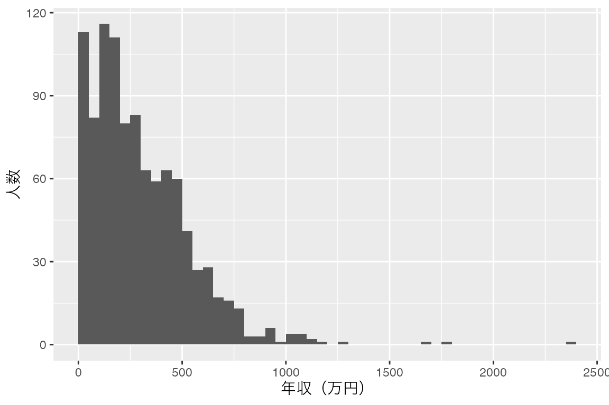
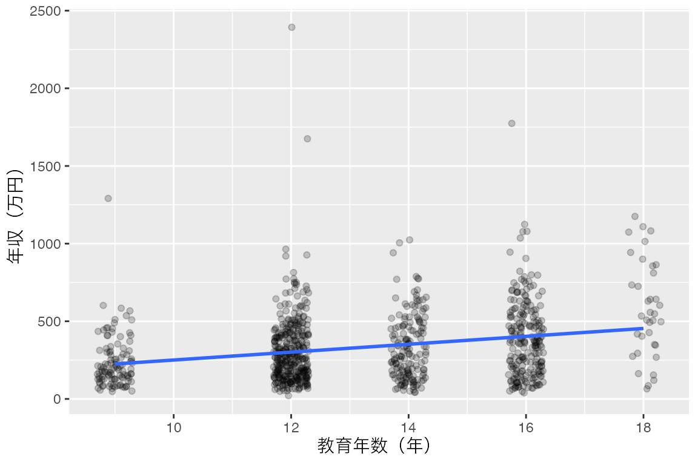
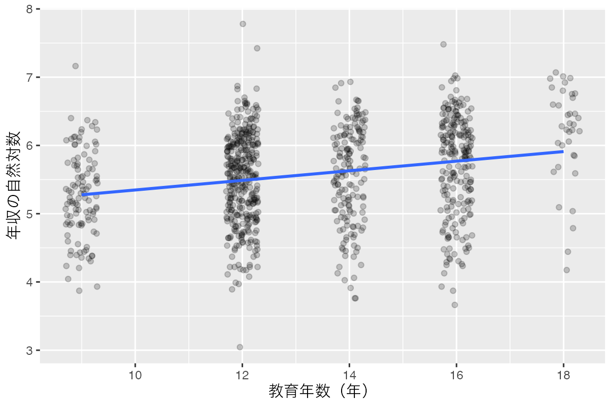
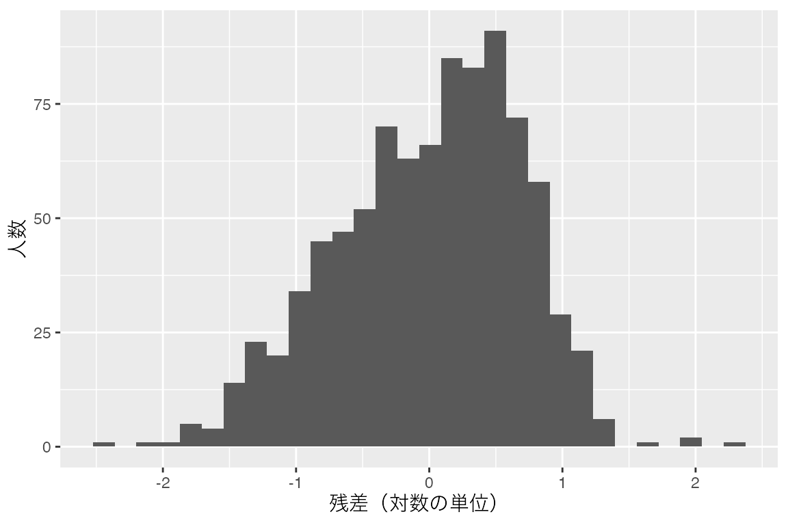
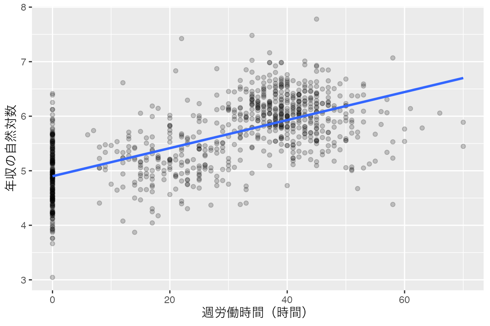

log(100)[1] 4.60517exp(log(100))[1] 100log(1)[1] 02026-10-16
2026-10-19
学校に通った年数が1年長いと、年収は何％違うのでしょうか。このページでは、成人1,000人が生活や仕事について答えたという設定の架空の調査データを使い、教育年数と年収の関係を調べます。
年収は、少数の人がとても高く、多くの人がその下に集まる、右に長い裾を引いた分布になりがちです。このような変数には、そのままの単位で回帰する方法と、対数をとってから回帰する方法があります。対数をとると、係数を「1年あたり何万円」ではなく「1年あたり約何％」として読めます。
まず、復習として年収をそのまま教育年数に回帰します。次に、年収の対数を被説明変数にして同じ分析を行い、係数の読み方と、2つの結果の違いを確かめます。分析のコードはAIに作ってもらい、自分のPositronで実行して確かめましょう。
「第8節（対数をとる）」までを読んで実行し、「第9節（練習問題）」に取り組んでください。年齢のように、途中で向きが変わる関係の扱いは、多項式回帰のページで扱います。
Moodleで指定された解説動画を確認してください。
ここでは、模擬調査データを使います。成人1,000人が生活や仕事についてのアンケートに答えたと想定した架空のデータで、1行が1人です。今回使うのは、次の2列です。
| 列名 | 内容 | 単位・値 |
|---|---|---|
education_years |
修了した課程までの教育年数 | 9年（中学校）/ 12年（高校）/ 14年（短大など）/ 16年（4年制大学）/ 18年（修士課程） |
income |
個人の年収 | 万円単位で、0以上の整数。0は年収がないことを表し、未回答ではありません |
実際の調査の結果ではありません。回帰の読み方を練習するため、教育年数や就業区分と年収の関連を設定して生成しています。欠損値はありません。分析結果を、実在する人々の教育と年収の関係の証拠とは扱いません。
対数とは、ある数が「決まった数（底）を何乗した値か」を表す数です。例えば、底を10にすると、100は10の2乗なので対数は2、1,000は10の3乗なので対数は3です。元の数が10倍になるたびに、対数は1ずつ増えます。このように、対数をとると、「何倍か」という掛け算の違いが、「いくつ差があるか」という足し算の違いに変わります。
統計では、底に \(e\)（約2.718）を使う自然対数を使うのが普通です。底が変わっても、掛け算の違いが足し算の違いになる性質は同じです。このページで対数と書くときは、自然対数を指します。
Rでは、log() が自然対数を計算します。exp() は \(e\) の累乗を求める関数で、log() と逆の働きをします。対数をとった値に exp() を使うと、元の数に戻ります。
log(100) の値そのものを覚える必要はありません。exp() で元の100に戻ることと、log(1) が0になることを確認してください。1より小さい正の数の対数は負の値になり、0や負の数の対数は計算できません。この点は、後で対象者を決めるときに関わります。
RとPositronの導入、フォルダの開き方やコードの実行方法は、「RとPositronのセットアップ」で確認してください。Positronで授業用フォルダを開き、今回のコードを保存するRスクリプトを用意します。例えば、log-transform.R という名前で保存してください。
模擬調査データのCSVを、Positronで開いている授業用フォルダに保存してください。ファイル名は mock_survey.csv です。セットアップや前処理のページで保存したCSVがこのフォルダにあれば、そのファイルを使えます。コードブック（データの説明書）には、すべての列の説明があります。
readr はCSVの読み込み、dplyr は対象者の絞り込み、ggplot2 は作図に使います。tidyverseを導入済みなら、追加のインストールは不要です。
まず、CSVを読み込み、survey という名前で保存します。
続いて、年収の分布を確認します。summary() で最小値から最大値までの要約を表示し、ヒストグラムで分布の形を見ます。Median は中央値、Mean は平均です。

中央値は248万円、平均は約298万円で、平均のほうが高くなっています。ヒストグラムを見ると、1,000人の約8割は500万円までに集まり、右側には2,000万円を超える人までまばらに続いています。少数の高い年収が平均を引き上げています。年収は0未満にはならず、上にだけ大きく広がる変数です。
もう1つ、最小値が0であることにも注目してください。一番左の棒には、年収がない人が含まれています。survey$income > 0 は、各行の年収が0より大きいかどうかを TRUE か FALSE で表します。table() で、それぞれの人数を数えます。
1,000人のうち105人は年収が0で、895人は年収が0より大きいことが分かりました。このページでは後で年収の対数をとりますが、0の対数は計算できません。そこで、年収が0より大きい895人を対象にします。対数をとらない最初の分析も、同じ895人で行います。対象をそろえないと、2つの結果の違いが、対数をとったためなのか、対象が変わったためなのかを区別できないからです。
filter() は、条件に合う行だけを残す関数です。年収が0より大きい行を残し、survey_positive という名前で保存します。
nrow() は行数を表示します。895人が残ることを確認してください。絞り込んだ後の年収の範囲も見ておきましょう。最小値が21万円になり、年収0の人が除かれています。
Min. 1st Qu. Median Mean 3rd Qu. Max.
21.0 156.5 277.0 332.6 455.0 2393.0 年収が0の105人を除くため、この後の結果は「年収がある人の中での、教育年数と年収の関係」です。働いていない人を含めた1,000人全体についての結果ではありません。年収が0になるかどうか自体を調べたい場合は、ロジスティック回帰のような別のモデルを使います。
最初の分析では、復習として、年収をそのままの単位で教育年数に回帰します。知りたいことは、教育年数が1年長いと、年収が平均で何万円違うかです。
| 項目 | 今回の仕様 |
|---|---|
| データ | 年収が0より大きい人に絞った survey_positive |
| 対象 | 年収が0より大きい895人 |
| 被説明変数 | income（年収、万円単位の整数、今回の895人では21〜2,393） |
| 説明変数 | education_years（教育年数、9・12・14・16・18のいずれか） |
| モデル | 切片を含む単回帰。年収を教育年数に回帰する |
| 数値の出力 | summary() の結果と、分析に使った人数 |
| 図 | 横軸が教育年数、縦軸が年収の散布図と回帰直線。残差のヒストグラム |
図の2つ目に、残差のヒストグラムを指定しています。残差とは、観測値から、データを使って推定した直線上の値（当てはめ値）を引いた値です。単回帰モデルの発展では当てはめ値と残差の散布図を扱いましたが、今回は残差の分布の形を見たいので、ヒストグラムにします。
AIには、上の表をもとにRコードを作ってもらいます。分析は、返ってきたコードを自分のPositronで実行して行います。AIには変数名や値の範囲などの説明だけを伝え、CSVや個々の回答は渡しません。今回使う2列の説明は指示に含めるので、コードブックの添付は不要です。
単回帰モデルのページと同じ組み立てなので、ここでは全文だけを示します。準備で survey_positive を作ったことと、その人数を伝えている点を確認してください。教育年数は5種類の値しかとらないため、散布図では点が縦に重なります。そのための指定も加えています。
Rで単回帰分析を行うコードを作ってください。実行は私がPositronで行います。
データフレームsurvey_positiveは準備済みです。年収が0より大きい895人で、欠損値はありません。
incomeは年収で、万円単位の整数です。今回の895人では21〜2,393です。
education_yearsは教育年数で、9、12、14、16、18のいずれかです。
incomeを被説明変数、education_yearsだけを説明変数とし、
切片を含むモデルをlm()で推定してください。
summary()で結果を、nobs()で分析人数を表示してください。
ggplot2で、横軸を教育年数、縦軸を年収にした散布図を描き、
同じモデルの回帰直線を重ねてください。信頼帯は表示しません。
教育年数は5種類の値しかとらず点が重なるので、点を半透明にし、横方向に少しずらしてください。
さらに、このモデルの残差のヒストグラムを描いてください。
図の軸ラベルは日本語にし、単位も付けてください。
元データを変更せず、変数の変換や標準化、対象者の絞り込みはしないでください。
代入は <-、パイプは |> を使い、関数はできるだけパッケージ名を付けてください。
推定、結果表示、作図を分け、短い説明を添えてください。返ってきたコードをPositronのスクリプトに貼り、準備コードに続けて実行します。実行後は「第6節（検証チェックリスト）」と照らし合わせ、必要に応じて下の参照コードも開いてください。エラーが出たら、個人の回答データを含めず、エラーメッセージと該当するコードをAIに伝えて修正を依頼してください。
自分のコードを実行してから開き、結果を照合してください。オブジェクト名や関数の並べ方が違っていても、指定した対象とモデルが同じかを確かめます。
lm() で回帰モデルを推定し、結果を model_linear に保存します。
summary() で係数などの結果を、nobs() で分析人数を表示します。
Call:
lm(formula = income ~ education_years, data = survey_positive)
Residuals:
Min 1Q Median 3Q Max
-388.68 -157.98 -37.08 112.82 2091.72
Coefficients:
Estimate Std. Error t value Pr(>|t|)
(Intercept) -3.516 42.375 -0.083 0.934
education_years 25.400 3.151 8.060 2.44e-15 ***
---
Signif. codes: 0 '***' 0.001 '**' 0.01 '*' 0.05 '.' 0.1 ' ' 1
Residual standard error: 225.4 on 893 degrees of freedom
Multiple R-squared: 0.06781, Adjusted R-squared: 0.06677
F-statistic: 64.96 on 1 and 893 DF, p-value: 2.442e-15[1] 895散布図に回帰直線を重ねます。教育年数は5種類の値しかとらないので、position_jitter() で点を横方向に少しずらし、半透明にして重なりを見やすくします。seed は、ずらし方を毎回同じにするための指定です。回帰直線は、ずらす前の値から計算されます。

residuals() で残差を取り出し、linear_residuals という表にまとめてから、ヒストグラムを描きます。bins は棒の本数です。
数値は表示桁によって丸め方が変わります。大きく違う場合は、対象者の絞り込み、回帰式、CSVのファイル名を順に確かめます。人数が1,000人なら、survey_positive ではなく survey を使っています。
散布図の点をずらす指定は、AIによって geom_jitter() を使うこともあります。どちらでも、縦方向にはずらしていないことと、回帰直線がずれる前の値から計算されていることを確認してください。
日本語のラベルが四角になったり消えたりする場合は、セットアップの「日本語ラベルで図を保存する」で、raggの導入とフォントの指定を確認してください。
Coefficients の Estimate 列に注目します。今回の回帰直線は、丸めると次の式です。年収の単位は万円です。
\[ \widehat{\text{年収}} = -3.516 + 25.400 \times \text{教育年数} \]
教育年数が1年長いと、年収の当てはめ値が約25.4万円高いという関係です。4年の違いなら約101.6万円の差です。教育年数が12年のときの当てはめ値は約301万円、16年のときは約403万円です。
(Intercept) は、教育年数が0年のときの当てはめ値です。今回のデータに教育年数が9年未満の人はいないので、切片は直線の位置を決める値として読み、意味のある金額とは解釈しません。
教育年数の行のp値は 2.44e-15 で、p < .001 と報告します。R²は約0.068で、このモデルは年収のばらつきの約6.8%を説明しています。教育年数だけで年収の大部分を説明できるわけではありません。
残差のヒストグラムを見ると、山は0のやや左にあり、右側に長い裾が伸びています。当てはめ値より2,000万円近く高い人がいる一方、当てはめ値より400万円以上低い人はいません。年収は0未満にならず、上には大きく広がるため、残差もこのように偏ります。
回帰分析では、残差が0を中心に左右対称に近い形で散らばることを想定しています。この想定から大きく外れると、p値や信頼区間の計算の前提が崩れます。また、年収の違いを「万円」の差で表すと、年収200万円の人の25万円と、年収1,000万円の人の25万円を同じ違いとして扱うことになります。次の節では、年収の対数をとって、この2つの問題に対応します。
ここからが、このページの主題です。知りたいことを「教育年数が1年長いと、年収は平均で何万円違うか」から、「教育年数が1年長いと、年収は約何％違うか」に変えます。そのために、被説明変数を年収の対数にします。
\[ \log(\text{年収}_i) = \beta_0 + \beta_1 \times \text{教育年数}_i + \varepsilon_i \]
このモデルでは、教育年数が1年違うときの「対数の差」が \(\beta_1\) です。対数の差が小さいとき、その値を100倍すると、元の値のおよその％の違いになります。例えば \(\beta_1\) が0.05なら、教育年数が1年長いと年収は約5%高い、と読みます。正確な換算と、この近似が使える範囲は、後の「近似ではなく正確に換算するには」で確認します。
仕様の変更は、次のとおりです。対象、説明変数、切片の扱いは変えません。
| 項目 | 対数をとる回帰での仕様 |
|---|---|
| 対象と説明変数 | 最初の回帰と同じ895人、education_years |
| 被説明変数 | income の自然対数。Rでは log(income) |
| モデル | 切片を含む単回帰。年収の対数を教育年数に回帰する |
| 図 | 横軸が教育年数、縦軸が年収の対数の散布図と回帰直線。残差のヒストグラム |
| 欲しい出力 | summary() の結果と分析人数。最初の回帰との教育年数の係数、R²の比較 |
最初のプロンプトを自分で修正し、AIにこの分析を依頼してください。 被説明変数を年収の対数に変えること、散布図の縦軸も対数にすること、最初のモデルと係数とR²を並べて表示することが伝わるか確かめます。最初のプロンプトには「変数の変換はしない」と書いてあるので、その部分も書き換える必要があります。
回帰式の左側を log(income) にします。log() は式の中でそのまま使え、survey_positive に新しい列を作る必要はありません。
Call:
lm(formula = log(income) ~ education_years, data = survey_positive)
Residuals:
Min 1Q Median 3Q Max
-2.44366 -0.46760 0.09144 0.52308 2.29212
Coefficients:
Estimate Std. Error t value Pr(>|t|)
(Intercept) 4.644069 0.129050 35.987 < 2e-16 ***
education_years 0.070343 0.009597 7.329 5.17e-13 ***
---
Signif. codes: 0 '***' 0.001 '**' 0.01 '*' 0.05 '.' 0.1 ' ' 1
Residual standard error: 0.6863 on 893 degrees of freedom
Multiple R-squared: 0.05674, Adjusted R-squared: 0.05569
F-statistic: 53.72 on 1 and 893 DF, p-value: 5.172e-13[1] 895縦軸を log(income) にして、散布図に回帰直線を重ねます。
ggplot2::ggplot(survey_positive,
ggplot2::aes(x = education_years, y = log(income))) +
ggplot2::geom_point(alpha = 0.2,
position = ggplot2::position_jitter(width = 0.3, height = 0, seed = 1)) +
ggplot2::geom_smooth(method = "lm", formula = y ~ x, se = FALSE) +
ggplot2::labs(x = "教育年数（年）", y = "年収の自然対数")
残差のヒストグラムも、最初のモデルと同じ方法で描きます。残差の単位は対数なので、横軸に万円は付きません。

最後に、教育年数の係数とR²を、最初のモデルと並べます。2つの係数は単位が違うので、大きさを直接は比べられません。
model_comparison <- data.frame(
model = c("年収をそのまま使う", "年収の対数を使う"),
education_coefficient = c(coef(model_linear)["education_years"],
coef(model_log)["education_years"]),
r_squared = c(summary(model_linear)$r.squared,
summary(model_log)$r.squared),
n = c(nobs(model_linear), nobs(model_log))
)
model_comparison model education_coefficient r_squared n
1 年収をそのまま使う 25.39959832 0.06781116 895
2 年収の対数を使う 0.07034288 0.05674459 895| モデル | 教育年数の係数 | 係数の単位 | R² | 人数 |
|---|---|---|---|---|
| 年収をそのまま使う | 25.400 | 万円 | 0.068 | 895 |
| 年収の対数を使う | 0.070 | 対数の差（×100でおよそ％） | 0.057 | 895 |
教育年数の係数は約0.070です。100倍して、教育年数が1年長いと、年収は約7.0%高いと読みます。4年の違いなら、係数を4倍した0.281から、約28%高いと読めます。ただし、差が大きくなるほど、この読み方は正確な値からずれます。正確な換算は下の折りたたみで確認してください。
最初のモデルの「1年あたり約25.4万円」は、年収が200万円の人にも1,000万円の人にも同じ金額の差を当てはめていました。対数をとったモデルの「1年あたり約7%」は、年収200万円の人なら約14万円、1,000万円の人なら約70万円の差に相当します。どちらが適切かは、年収の違いを金額で考えたいのか、割合で考えたいのかによります。
残差のヒストグラムは、0の近くに山があり、左右の裾の長さがほぼ同じになりました。年収をそのまま使ったときに見えた、右側の長い裾はなくなっています。対数をとったことで、回帰分析が想定する残差の形に近づきました。
R²は、約0.068から約0.057に下がりました。対数をとれば当てはまりが良くなる、と決まっているわけではありません。2つのR²は、年収のばらつきと、年収の対数のばらつきという別のものを説明した割合なので、R²の大小だけでどちらのモデルがよいかは決められません。今回対数をとった理由は、係数を割合で読めることと、残差の偏りが小さくなることです。
係数 \(\beta_1\) を正確に％に直すには、\(100 \times (e^{\beta_1} - 1)\) を計算します。Rでは 100 * (exp(0.070343) - 1) で、約7.3%です。近似の7.0%とは0.3ポイントの違いです。
4年分なら、\(100 \times (e^{4 \times 0.070343} - 1)\) で約32.5%です。係数を4倍した近似の約28%より大きくなります。対数の差が0.1を超えるあたりから近似のずれが目立ち、0.5なら近似の50%に対して正確には約65%です。係数が小さいときは「×100でおよそ％」で読み、大きな差を扱うときは exp() で換算してください。
切片の約4.644は、教育年数が0年のときの年収の対数の当てはめ値です。exp(4.644) は約104万円ですが、教育年数が9年未満の人はいないので、金額としては解釈しません。
教育年数が16年のときの当てはめ値は、対数で約5.770、exp() で戻すと約320万円です。この値は、16年の人の年収の平均ではなく、年収の対数の平均を元の単位に戻した値です。平均より小さめになるのが普通で、実際に16年の221人の年収の平均は約385万円です。元の単位に戻した当てはめ値を、そのまま平均年収とは呼ばないでください。
本文の分析はここまでです。続いて、「第9節（練習問題）」に取り組んでください。
同じ survey_positive の895人を使い、年収の対数を週労働時間 weekly_work_hours に回帰してください。週労働時間は0〜70時間の整数で、働いていない人は0時間です。年収が0より大きければ、0時間の人も対象に含めます。対象、変数、モデル、欲しい出力を表にまとめてから、AIにコードを依頼してください。
係数、p値、R²、分析人数を表示し、週労働時間を横軸、年収の対数を縦軸にした散布図に回帰直線を重ねてください。週労働時間が1時間長い場合と、10時間長い場合の年収の違いを、％で説明してください。
本文の比較表を使い、教育年数の係数25.400と0.070を、それぞれ単位を付けて説明してください。また、年収が200万円の人と1,000万円の人とで、教育年数が1年違うときの年収の差は、2つのモデルでそれぞれ何万円になるでしょうか。R²が下がったことは、対数をとるモデルが劣っていることを意味するでしょうか。
「年収が0の人は対数がとれないので除いたうえで、年収の対数を教育年数に回帰したい」と指示したところ、次のコードが返ってきたとします。
エラーなく実行でき、教育年数の係数は約0.103と表示されます。このコードは、指示とどこが違うでしょうか。また、この0.103を本文の0.070と同じ意味で読めない理由を説明してください。
対象は survey_positive の895人、被説明変数は log(income)、説明変数は weekly_work_hours です。0時間の人を除かないことを指定します。
Call:
lm(formula = log(income) ~ weekly_work_hours, data = survey_positive)
Residuals:
Min 1Q Median 3Q Max
-2.00960 -0.35279 0.02002 0.35720 1.95780
Coefficients:
Estimate Std. Error t value Pr(>|t|)
(Intercept) 4.8999612 0.0314253 155.92 <2e-16 ***
weekly_work_hours 0.0257184 0.0009868 26.06 <2e-16 ***
---
Signif. codes: 0 '***' 0.001 '**' 0.01 '*' 0.05 '.' 0.1 ' ' 1
Residual standard error: 0.5326 on 893 degrees of freedom
Multiple R-squared: 0.432, Adjusted R-squared: 0.4314
F-statistic: 679.2 on 1 and 893 DF, p-value: < 2.2e-16[1] 895
週労働時間の係数は約0.0257、R²は約0.432、人数は895人です。p値は <2e-16 で、p < .001 と報告します。週労働時間が1時間長いと、年収は約2.6%高いという関係です。10時間長い場合は、係数を10倍した0.257から約26%と読めます。正確に換算すると 100 * (exp(10 * 0.0257184) - 1) で約29%です。
25.400は、教育年数が1年長いと年収の当てはめ値が約25.4万円高いという、万円単位の差です。0.070は、教育年数が1年長いと年収の対数が0.070大きい、つまり年収が約7%高いという、割合の差です。単位が違うので、数の大小で効果の強さは比べられません。
年収をそのまま使うモデルでは、年収が200万円の人でも1,000万円の人でも、1年の違いは約25.4万円です。対数を使うモデルでは、約7%にあたる金額なので、200万円の人なら約14万円、1,000万円の人なら約70万円です。
R²は年収のばらつきを説明した割合と、年収の対数のばらつきを説明した割合なので、別のものを測っています。下がったことだけで、対数をとるモデルが劣るとは言えません。
指示と違うのは対象です。survey の1,000人をそのまま使い、年収に1を足して対数をとっています。年収が0の105人は log(0 + 1) = 0 として分析に含まれ、人数は1,000人になります。
1を足すのは、0の対数がとれない問題を避けるためによく使われる方法ですが、結果の意味が変わります。年収0の人を「年収1万円」として含めるため、0.103という係数は、年収がない人も含めたうえでの、別の変数についての値です。年収が小さい人ほど、1万円を足す影響も大きくなります。指示どおりに分析するには、survey_positive を使い、log(income) を被説明変数にします。
(Intercept) education_years
3.6346971 0.1030864 [1] 1000人数が表示されていても、それが仕様どおりの人数かを確認しなければ、依頼した分析になっているとは言えません。
被説明変数と説明変数の両方に対数をとるモデルもあります。
\[ \log(y_i) = \beta_0 + \beta_1 \log(x_i) + \varepsilon_i \]
このとき \(\beta_1\) は、\(x\) が1%高いと \(y\) が約 \(\beta_1\)%高い、という関係を表します。両方を割合で読むので、単位の異なる変数どうしでも係数を比べやすくなります。経済学では、この \(\beta_1\) を弾力性と呼びます。
gapminder パッケージには、国ごとの平均余命 lifeExp（年）と1人あたりGDP gdpPercap（米ドル）などが入っています。パッケージを導入し、2007年のデータを取り出してください。
次の2つのモデルを推定し、散布図に回帰直線を重ねて比べてください。
2つ目の係数は、1人あたりGDPが1%高い国では平均余命が約何％高いか、と読みます。散布図を見て、どちらのモデルが2つの変数の関係をよく表しているか、またその理由を考えてください。1つ目のモデルでは、係数が e-04 のような表記で表示されることがあります。これは \(10^{-4}\) 倍、つまり0.0001倍という意味です。
年齢と年収のように、途中で増え方が変わったり、向きが変わったりする関係には、対数ではなく説明変数の二乗を加える方法があります。多項式回帰のページで扱います。
最終更新: 2026-10-19